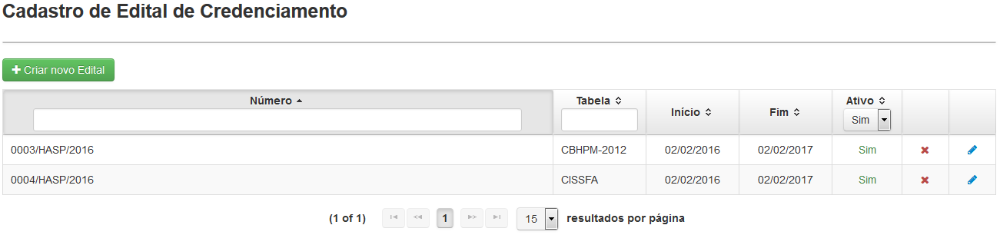
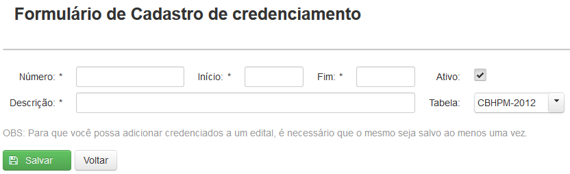
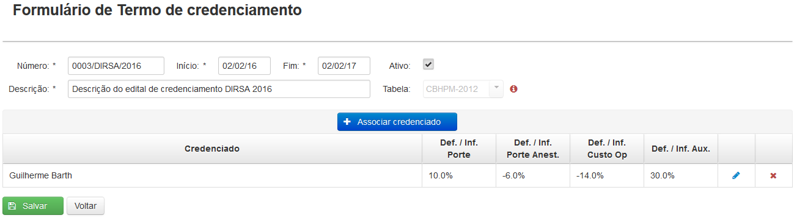

Clicando em 'Cadastro' surgirá uma tela(Fig.12) onde será apresentada uma lista dos editais cadastrados.
É possível facilitar a busca por editais utilizando o filtro Número ou Tabela, bastando apenas clicar e digitar a palavra a ser buscada, ou selecionando a opção Ativo.

Fig.12 Tela 'Cadastro de Edital de Credenciamento'
O botão ( ) permite desativar e o botão (
) permite desativar e o botão ( ) permite ativar um edital.
) permite ativar um edital.

Ao desativar ou ativar um edital uma mensagem de confirmação será exibida
Ao clicar no botão() aparecerá a tela 'Formulário de Cadastro de credenciamento'(Fig.13).

Fig.13 Tela 'Formulário de Cadastro de Crendecimento'
Na tela 'Formulário de Cadastro de credenciamento' será possível cadastrar um novo Edital inserindo os dados:
Número: NUP (Número Único de Processo)
Início: data de início da vigência do edital
Fim: data de término da vigência do edital
Descrição: descrição do edital e Nº do DOU no qual foi publicado
Tabela: CBHPM ou CISSFA
Ao salvar os dados do novo Edital a tela 'Cadastro de Edital de Credenciamento' reaparecerá.
Após cadastrar um novo edital clique em Editar( ) e surgirá novamente a tela 'Formulário de Termo de credenciamento', com a opção de Associar credenciado(Fig. 14)
) e surgirá novamente a tela 'Formulário de Termo de credenciamento', com a opção de Associar credenciado(Fig. 14)

Fig.14 Tela 'Formulário de Edital de Credenciamento'
Nessa tela será possível visualizar todos os credenciados já cadastrados anteriormente e seus índices Deflatores e Inflatores (Def./Inf.) aplicados aos Portes, Portes Anestésicos, UCO, e honorários de Auxiliares, de acordo com o firmado nos respectivos Termos de Credenciamento.
Ao clicar no botão () será possível associar um credenciado, já inserido previamente no Sistema por meio da Tela de Cadastros – Credenciados, ao edital e definir os índices Deflatores e Inflatores(Somente para editais com a tabela da CISSFA) específicos de cada Credenciado na tela 'Associar credenciado' (Fig.15).
No caso de índices Deflatores deverá ser utilizado o sinal negativo '-' antes do número (que representa o percentual de deflação).

Fig.15 Tela 'Adicionar credenciado'
Após a associação do credenciado ao edital, o Administrador poderá posteriormente editar os índices Inflatores e Deflatores clicando no ícone Editar credenciado( ), bem como excluir o credenciado clicando no ícone Excluir credenciado()(Para editais com a tabela da CISSFA somente a opção de excluir estará disponível).
), bem como excluir o credenciado clicando no ícone Excluir credenciado()(Para editais com a tabela da CISSFA somente a opção de excluir estará disponível).